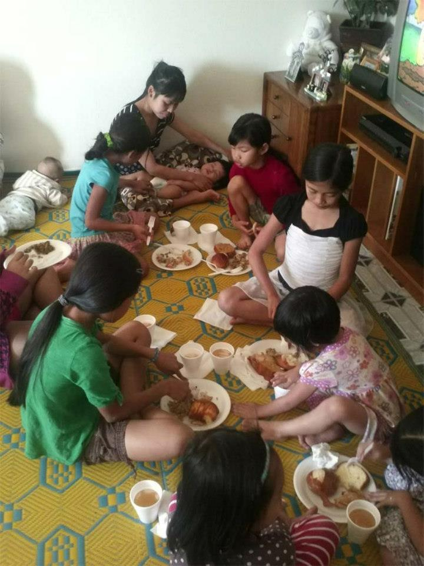

YOUR CONTRIBUTIONS CHANGE LIVES OF REFUGEES AND THE UNDER SERVED IN OUR COMMUNITY
Contributions to Rockhaven Ministries, large and small, give the gift of hope, health & restoration to the forgotten and vulnerable people we serve, and help create a better community for all of us in Dallas County. The following are some examples of how your contributions can make a difference. Most of these needs are on-going. We hope you’ll consider making a regular pledge that would help us care for struggling individuals and families year-round.
- $5-$10 One day’s transportation costs for an adult to get to work, school, or appointments, or for a senior or disabled person to use Outreach
- $10 A store gift certificate for personal hygiene items for a homeless person
- $25 One eight-hour financial education class for a low-income adult or refugee
- $35 One hour of employment preparation, job development, placement and coaching for an individual diagnosed with mental illness
- $40 One hour of services for a homeless person by a Rockhaven Ministries’ Navigator Program case manager
- $50 A hot, nutritious meal for 10 very low-income seniors served in a community setting
- $100 Thirteen hours of respite care for two children being cared for by a grandparent or relative caregiver
- $250 A trip to the theater or an amusement park for 20 adults living with disabilities
- $500 Ten days of adult day care for very low-income elders with dementia and a much-needed break for caregivers
- $1,000 Computer skills training to help one very low-income person obtain a new or better-paying job
- $1,000 Twenty hours of individual case management to help grandparent caregivers provide a safe and secure home for children in their care
- $1,500 Twelve weeks of wellness services—including diabetes and blood pressure screening, health education and exercise classes—for low-income seniors
- $2,000 Eight weeks of subsidized adult day care twice a week for four very low-income seniors with Alzheimer’s or dementia, and a break for family caregivers
- $4,000 400 wellness and health monitoring sessions for low-income, non-English speaking Vietnamese and Chinese elders with a tri-lingual registered nurse
- $5,000 Resettle and employ a newly arrived refugee
- $10,000 An entire library of books for one Breakthrough after-school program site serving 100 children in a low-achieving school